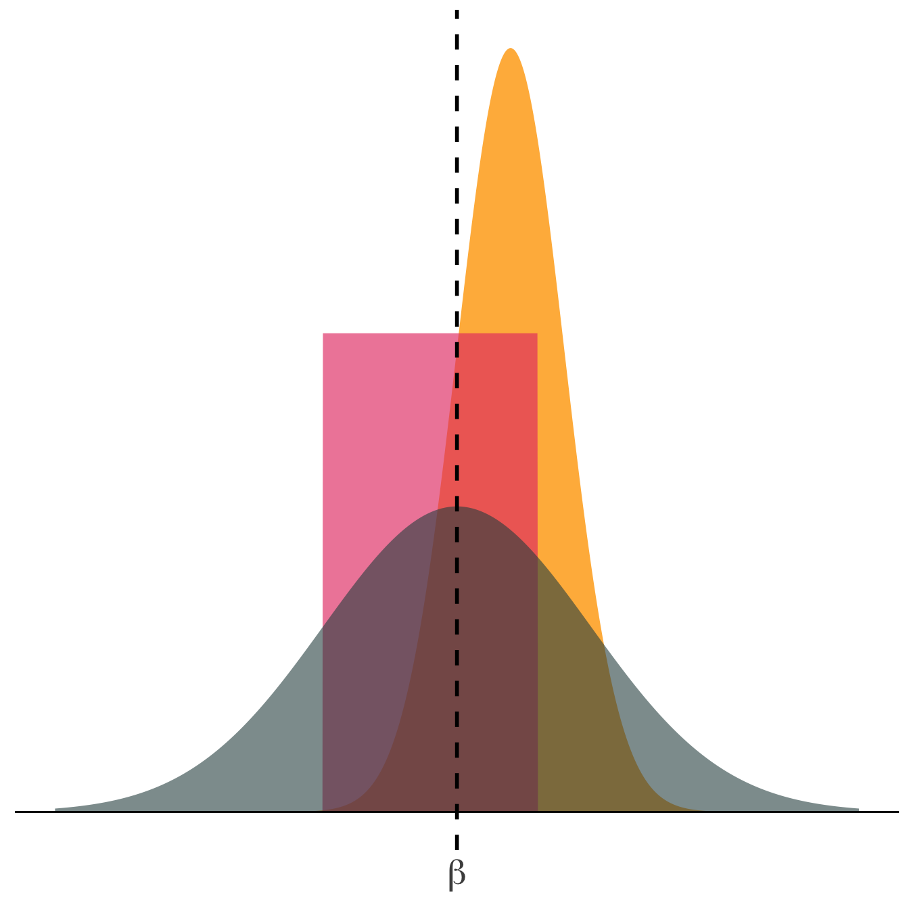

4 MCO: Propiedades y supuestos
4.1 Propiedades
Pregunta: ¿Qué propiedades podrían ser importantes para un estimador? Tangente: Primero revisemos las propiedades estadísticas. Repaso: Funciones de densidad
Recordemos que utilizamos las funciones de densidad de probabilidad (FDP- PDF) para describir la probabilidad de que una variable aleatoria continua tome valores en un rango dado. (El área total = 1).
Estas FDPs caracterizan distribuciones de probabilidad, y las distribuciones más comunes/famosas/populares reciben nombres (por ejemplo, normal, t, Gamma).
Repaso: Funciones de densidad
La probabilidad de que una variable aleatoria normal estándar tome un valor entre -2 y 0: \(\mathop{\text{P}}\left(-2 \leq X \leq 0\right) = 0.48\)

Repaso: Funciones de densidad
La probabilidad de que una variable aleatoria normal estándar tome un valor entre -1.96 y 1.96: \(\mathop{\text{P}}\left(-1.96 \leq X \leq 1.96\right) = 0.95\)

Repaso Funciones de densidad
La probabilidad de que una variable aleatoria normal estándar tome un valor mayor a 2: \(\mathop{\text{P}}\left(X > 2\right) = 0.023\)

Imaginemos que estamos tratando de estimar un parámetro desconocido \(\beta\), y conocemos las distribuciones de tres estimadores competitivos. ¿Cuál de ellos elegimos? ¿Cómo decidimos?

Pregunta: ¿Qué propiedades podrían ser importantes para un estimador? Respuesta uno: Sesgo (Bias). En promedio (después de muchas repeticiones), ¿el estimador tiende hacia el valor correcto? Más formalmente: ¿La media de la distribución del estimador es igual al parámetro que estima? \[ \mathop{\text{Sesgo}}_\beta \left( \hat{\beta} \right) = \mathop{\boldsymbol{E}}\left[ \hat{\beta} \right] - \beta \]
Respuesta uno: Sesgo (Bias).
Estimador Insesagado: \(\mathop{\boldsymbol{E}}\left[ \hat{\beta} \right] = \beta\)

Estimador Sesagado: \(\mathop{\boldsymbol{E}}\left[ \hat{\beta} \right] \neq \beta\)

Respuesta 2: Varianza.
Las tendencias centrales (medias) de las distribuciones competidoras no son lo único que importa. También nos preocupa la varianza de un estimador..
\[ \mathop{\text{Var}} \left( \hat{\beta} \right) = \mathop{\boldsymbol{E}}\left[ \left( \hat{\beta} - \mathop{\boldsymbol{E}}\left[ \hat{\beta} \right] \right)^2 \right] \]
Los estimadores con menor varianza significan que obtenemos estimaciones más cercanas a la media en cada muestra.
Respuesta dos: varianza

Respuesta uno: Sesgo
Respuesta dos: Varianza
El trade off: sesgo vs varianza .
¿Deberíamos estar dispuestos a aceptar un poco de sesgo para reducir la varianza?
En econometría, generalmente nos adherimos a estimadores insesgados (o consistentes). Pero en otras disciplinas (especialmente ciencias de la computación), se reflexiona un poco más sobre este compromiso.